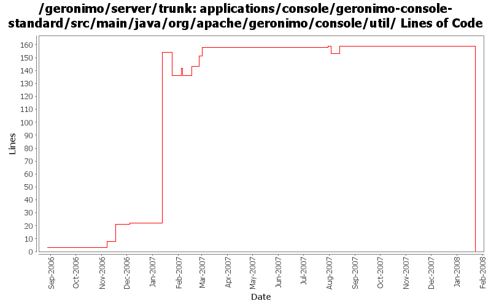

[root]/applications/console/geronimo-console-standard/src/main/java/org/apache/geronimo/console/util

| Author | Changes | Lines of Code | Lines per Change |
|---|---|---|---|
| Totals | 46 (100.0%) | 328 (100.0%) | 7.1 |
| ccardona | 1 (2.2%) | 132 (40.2%) | 132.0 |
| kevan | 18 (39.1%) | 120 (36.6%) | 6.6 |
| pmcmahan | 4 (8.7%) | 32 (9.8%) | 8.0 |
| vamsic007 | 3 (6.5%) | 22 (6.7%) | 7.3 |
| gdamour | 4 (8.7%) | 21 (6.4%) | 5.2 |
| jdillon | 14 (30.4%) | 1 (0.3%) | 0.0 |
| jbohn | 1 (2.2%) | 0 (0.0%) | 0.0 |
| djencks | 1 (2.2%) | 0 (0.0%) | 0.0 |
(GERONIMO-3747) Moved applications/* to plugins/*
0 lines of code changed in 11 files:
GERONIMO-2775 Get Jetty Stats portlet working again. Merge of 580137 from branches/2.0
0 lines of code changed in 1 file:
GERONIMO-3254 Admin Console Wizard to auto generate geronimo-web.xml
and dependencies GERONIMO-3394, GERONIMO-3395, GERONIMO-3396, GERONIMO-3397, GERONIMO-3398
o First commit of "Create Plan" portlet code.
o Thanks to Shiva Kumar H R for this work.
6 lines of code changed in 1 file:
GERONIMO-3350 cleanup now-unused methods
0 lines of code changed in 1 file:
GERONIMO-3350 updates to web connector portlet for recent api WebManager api changes. This work
is not complete yet but should allow others to work on the tomcat and jetty connectors with some
UI support. Creating and editing secure connectors in particular is still very fragile.
The basic UI with some input validation seems to work OK. Had to comment out some of the
connector attributes for the jetty connectors because the kernel thinks that they are not persistent
attributes when it tries to create a new connector, even though the gbean info looks to me like they
should be, needs more investigation.
9 lines of code changed in 1 file:
Should have been ci as part of r519908.
* Do not start jsr88-cli within the server. It defines a GBean implementing
the PluginInstaller type, GBean named ModuleConfigurerRegistry, which
is not intended to be used within a server as the other GBeans of this
module. This causes a NPE during the installation of plugins via the command
line deployer: CommandInstallCAR tries to execute startInstall
against all the GBeans implementing the PluginInstaller type and this
invokation fails with a NPE against ModuleConfigurerRegistry.
* Push up the DeploymentFactoryImpl implementation to BaseDeploymentFactory,
such that DeploymentFactoryWithKernel can extend it instead of
DeploymentFactoryImpl. This refactoring is done to ensure that
DeploymentFactoryWithKernel does not register a DeploymentFactoryImpl
instance with DeploymentFactoryManager (done via a static block).
This fixes GERONIMO-2983 Installation of plugins via the command line is
broken.
2 lines of code changed in 1 file:
Std props
1 lines of code changed in 1 file:
GERONIMO-2854 alphabetical sort based on classloader names in the admin console's classloader viewer.
Thanks to Rakesh Midha for the patch
8 lines of code changed in 1 file:
GERONIMO-2854 inverse option for classloader view in the admin console
10 lines of code changed in 1 file:
Second attempt to change the way the online/offline deployers and the JSR88
deployment driver work. The first attempt was breaking the TCK amd the
eclipse plugin.
Online deployer, i.e. deployer.jar, boots a Kernel to load its dependencies,
e.g. geronimo-deploy-tool, and registers the available ModuleConfigurers with
the DeploymentManager.
ModuleConfigurers to be registered are loaded by the persistent configuration
list jsr88-configurer-config.xml.
In the case of an offline deployment, the online deployer starts the
offline-deployer configuration within the same Kernel. In turn, the
offline-deployer configuration starts a list of configurations to register
the available module builders.
Add a log4j configuration for the online deployer.
DeploymentFactoryBootstrapper is the new JSR88 deployment driver. It boots a
kernel; starts the configuration list jsr88-configurer-config.xml; retrieves
the "actual" DeploymentFactory implementation from the kernel; and delegates
to this retrieved imoplementation.
The JSR88 JAR driver is now named jsr88-deploymentfactory.jar.
This fixes:
* GERONIMO-2794 - Improve online deployer to register ModuleConfigurers from the repository; and
* GERONIMO-2767 - Minimize side effects of the offline deployer
9 lines of code changed in 1 file:
Revert deployer changes as they do break the Eclipse plugin and TCK.
I will investigate offline.
svn merge -r503370:503369 .
2 lines of code changed in 1 file:
Online deployer, i.e. deployer.jar, boots a Kernel to load its dependencies,
e.g. geronimo-deploy-tool, and registers the available ModuleConfigurers with
the DeploymentManager.
ModuleConfigurers to be registered are loaded by the persistent configuration
list jsr88-configurer-config.xml.
In the case of an offline deployment, the online deployer starts the
offline-deployer configuration within the same Kernel. In turn, the
offline-deployer configuration starts a list of configurations to register
the available module builders.
Add a log4j configuration for the online deployer.
This fixes:
* GERONIMO-2794 - Improve online deployer to register ModuleConfigurers from the repository; and
* GERONIMO-2767 - Minimize side effects of the offline deployer
8 lines of code changed in 1 file:
GERONIMO-2690 Fix OutOfMemoryErrors in ClassLoader view -- thanks for the patch Rakesh! Also, set svn properties for files and remove tab characters from source files.
114 lines of code changed in 1 file:
GERONIMO-2689 : New View for JNDI name in all the contexts
GERONIMO-2690 : New view for all the classloaders and classes loaded in it
GERONIMO-2691 : New view for the hierarchical modules and linked dependencies
Thanks Rakesh!
132 lines of code changed in 1 file:
GERONIMO-1601 Remove the "Old Keystore" portlet
o Merging rev 482142 from branches\1.2
o Removed ObjectNameConstants.KEYSTORE_OBJ_NAME missed earlier. This was breaking the Console Realm portlet.
3 lines of code changed in 1 file:
GERONIMO-2537 Update more src file headers to be compliant with new apache policy. Also made some updates for consistency
0 lines of code changed in 16 files:
GERONIMO-2413 Add a Certification Authority (CA) portlet to Geronimo console
13 lines of code changed in 1 file:
GERONIMO-2537 Update the src headers in the non-module files. They need to be compliant with the new ASF src header and copyright policy (http://www.apache.org/legal/src-headers.html). I also did some cleanup of the src headers and tried to get them in a consistent format
6 lines of code changed in 1 file:
GERONIMO-2553 database pools portlet references non-existent version of tranql. merging fix from rev 412804 plus adding logic to look up the tranql version number if its not specified in the DatabaseDrivers RAR info
5 lines of code changed in 1 file:
Use logging instead of System.out and printStackTrace
0 lines of code changed in 2 files: